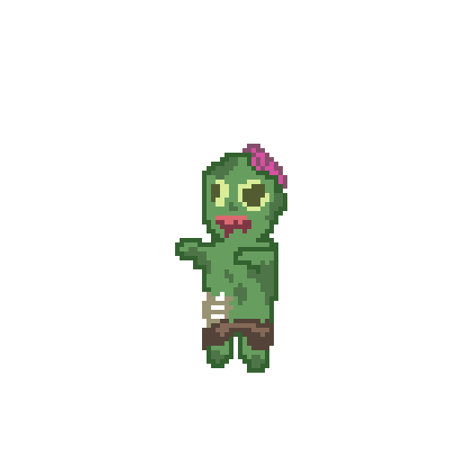

A thrilling horror game, intended to scare users
with various traps, enemies and stages. Main goal is to avoid all enemies
and escape the mansion.
01 — Concept & Goals
This project began with the idea of using jumpscare and loud noises to create and intense experience.
I wanted players to rely on their flashlight to stun ghosts without getting touched.
My goal was to balance fear, timing, and exploration while keeping gameplay readable and simple.
* Early sketch of gameplay background.
* Early sketch of jumpscare scene.
02 — Movement Prototype
Movements were tested out with keyboard controls as well as arrow key.
Enemies were made sure to select target from a certain distance and follows
the player until they our out of range.
*Movement test video of player / enemies.
03 — Enemies + Traps
Zombies and Ghosts follow a strict steer towards target to wonder mechanism.
FOV is used to detect players. Arrows fly from top to bottom in random x coordinate.
Each type of enemy does significant damage to the player, increasing the level of difficulty.
* Ghost — fast, chase-based enemy.

* Zombie — Longer chase-drive, chase-based enemy
* Arrow Trap — fires every few seconds at random x-axis.
04 — Flashlight System + Jumpscare
The flashlight uses a similar FOV type mechanism to create a cone shaped light beam that
would stun enemies when shinet at the target. SPACE BAR turns on the flashlight on and off.
Turning the flashlight on lowers the battery and shortens duration.
Jumpscare is a sudden reaction that swtiches on when user is in contact with the player.
A scary image as well as loud screaming noise is intended to frighten user
* Flashlight cone visibility test.
* Jumpscare & sound test.
05 — Reflection
Through this project, I strengthened my understanding of game loops, state machines,
collision detection, and responsive UI design.
I also learned the importance of testing mechanic readability early in development.